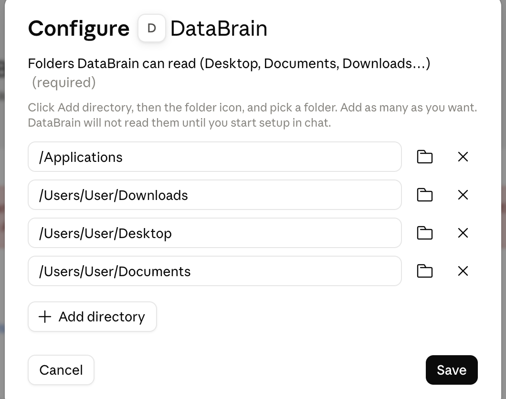

What DataBrain will not read
- Folders named
Resources/Sensitive,.git,node_modules,.obsidian,.ssh,.gnupgand.aws, and any file that is not.md,.txt,.pdf,.docx,.doc,.pagesor.rtf. - Names are checked first, then text is checked on your Mac. Nothing is sent.
- Anything that looks private is held back until you say it is fine: taxes, bank, ID, medical, payslips, passwords, keys, contracts, in English and French, and any text with an IBAN, card number, social security number or private key.
- Scanned images such as
IMG_2231.jpgare not checked.
Do this:
- 1 →Download the file. Download databrain.mcpb
- 2 →Open Claude → Settings… → Extensions.Extensions is in the left list, under This computer.
- 3 →Click Advanced settings.
- 4 →Click Install extension.It is at the bottom of the page, under Extension developer.
- 5 →In the window that opens, click databrain.mcpb, then click Open at the bottom right.It is in Downloads, in the left list. If your Mac added a number to the name, such as databrain (1).mcpb, click that one. If the next page says Update instead of Install, DataBrain was installed before. Uninstalling does not clear its saved folder list, so check that list in step 7 either way.
- 6 →Click Install.The Configure DataBrain window opens next.
- 7 →Click Add directory, then the folder icon, and pick Desktop. Do it again for Documents, then Downloads. Nothing gets moved. To include the apps you write in, like Notes: click Add directory, the folder icon, Applications in the left list, then Open. Add one more directory for every other top-level folder you want searched (see footnote 1). These are all the folders your DataBrain can read. Sensitive information is held back and left untouched during setup.Under Folders DataBrain can read, click Add directory. An empty row appears. Click the folder icon at the right end of that row. A Mac window opens. On its left, under Favorites, click Desktop, then click Open at the bottom right. The row now shows your Desktop folder. Click Add directory again and do the same with Documents, then Downloads. A folder is not in the list? Click the house icon with your name on the left, then double-click the folder, then click Open. Folders from an earlier install can still be listed here, even after you uninstalled: remove any folder you do not want with its X. Applications shows the apps you installed and the ones that come with your Mac, together. Password managers are never read. To search other folders later, add them here the same way. If you close this window by mistake, open Claude → Settings… → Extensions → DataBrain → Configure.
This section should look somewhat like this:
- 8 →Click Save. Then click the Disabled switch so it reads Enabled, and close the window with the X at the top right.Click Save first: once the switch reads Enabled, there is no Save button to click.
- 9 →Check that DataBrain loaded. Close Settings completely, then open Claude → Settings… → Extensions again: DataBrain should be listed. Then open a new chat, click the + sign in the message box, click Connectors, and check that DataBrain is switched on.You may need to scroll through your connectors to find it.
- 10 →In a new chat, send this message:
Claude shows you the folders DataBrain will read, in the chat. Check each one, then say yes. If a folder is wrong, say no, open Claude → Settings… → Extensions → DataBrain → Configure, remove it with its X, then send the message again. Claude may list files that look private and ask which are fine to index. If you are not sure, say none. When Claude asks to use DataBrain, we recommend Always allow. People approve almost every permission prompt anyway (Anthropic found 93% of prompts are approved), so a long run of prompts only interrupts setup. - 11 →When your Mac asks to let Claude access your Desktop or Documents folder, or to control an app like Notes, click OK (or Allow).It can appear while Claude sets up. Documents, Desktop, Downloads, iCloud Drive, external drives, and each app each ask once. If you click Don't Allow for an app, DataBrain tells you where to turn it on later: System Settings → Privacy & Security → Automation.
- 12 →When Claude says DataBrain is set up, tell Claude how to use it: open Claude → Settings…, click Account in the left list, and find the big text box named Instructions for Claude at the bottom of the Profile section. If the box already has text, keep all unrelated instructions. Replace any older DataBrain instruction with this line; if none is present, click at the end of the text, press Return twice, then paste it. If the box is empty, just paste it:
Then open a new chat and send the question DataBrain gave you.
That's all.
You can delete the downloaded file now. It is in your Downloads folder.
DataBrain lives in your home folder: Finder → Go → Home.
To remove DataBrain: Claude → Settings… → Extensions, then on the DataBrain row click the ⋯ button (to the right of Configure) and click Uninstall (red). Your own files are never touched. DataBrain's folder stays on your Mac, in your home folder (Finder → Go → Home), named DataBrain, or DataBrain 2 and so on. It holds copies of the text DataBrain read, so drag it to the Trash if you want that gone.
Footnote 1: which folders to add
For people who know computers: adding a directory gives DataBrain read access to that folder and everything under it, including all subfolders. Add the top-level (parent) folders you want searched, such as the ones in your Finder Favorites list: Desktop, Documents, Downloads. You do not need to add their subfolders. Do not add your whole home folder: DataBrain refuses it.
Like you are five: a folder is a box. A small box holds a few papers. A big box holds lots of little boxes. If you pick a big box, DataBrain looks inside all the little boxes in it too, so you do not have to pick each little box. But a big box like Documents has everything in it, even papers you may not want. If you only want one little box, pick just that one.
Your files are safe
- DataBrain only reads your files. It never changes, moves, or deletes them.
- The search index stays on your Mac, in the DataBrain folder.
- Claude sees only the passages it pulls up to answer your question.
- The passages Claude reads go into your Claude chat like any message you type, and when you allow a Mac app permission, it applies to Claude as a whole, not only to DataBrain.
If something goes wrong
- Claude can't read your files: open System Settings → Privacy & Security → Files & Folders, turn on Claude, then send
Continue setting up my DataBrain - Claude says a DataBrain folder already exists: do what Claude tells you.
- Anything else: send
Run DataBrain diagnosticsand pass Claude's reply to whoever sent you this guide.
If DataBrain stops working
This part is outside the 12 steps. Send Claude one of these two messages. DataBrain has a repair tool for what a restart, an update or a folder problem can break.
- Everything just stopped, or Claude shows an error:
- Claude says a folder changed or was replaced (for example restored from a backup, or moved by iCloud). Put the name of the folder where
<name>is, for example Downloads:
If Claude does not answer at all, or DataBrain is not listed in the chat, these steps need no help from Claude:
- Turn the extension on: Claude → Settings… → Extensions → DataBrain, and make the switch read Enabled.
- Let your Mac share the folders: System Settings → Privacy & Security → Files & Folders, turn on Claude.
- Install the file again, the same way as steps 2 to 6, then pick your folders again (step 7). DataBrain finds the brain it already made and uses it; it does not start over, and your files are still searchable. This was tested with the extension and its saved settings removed and the DataBrain folder kept.
The menu names in this part were not re-checked on a Mac for this version.
Tested on one Mac.